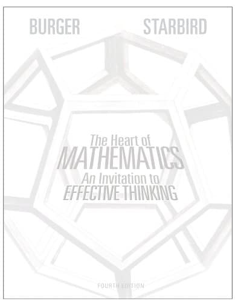

| Welcome! |
|---|
| Classes |
|---|
| Instructor |
|---|
| Course Text with Learning Goals |
|---|
|  |
The text is by Edward B. Burger and Michael Starbird. You want to ensure that you buy a version that also has access to WileyPlus. Please let me know if you are having trouble finding a copy. Reading will be a large portion of this course, and I encourage you to obtain this text in a format which works well for you. |
We will focus on the following chapters of this text. Some potential relevant goals are listed below each chapter.
Chapter 2: Number Contemplation
• Recall properties of the natural numbers
• Discover patterns in sequences of numbers
• Recall the definition and properties of prime numbers
• Calculate the prime number factorization of a given number
• Use modular arithmetic, especially for encoding
• Identify non rational numbers and recall properties of the decimal expansion of real and rational numbers
Chapter 4: Geometric Gems
• Recall and apply the Pythagorean Theorem
• Watch and respond to a proof of the Pythagorean Theorem
• Read primary historical sources related to plane geometry
Chapter 6: Modeling Our World Through Graphs
• Demonstrate that a graph is planar and recall the 4 color Theorem
• Apply basic algorithms on graphs
• Apply mathematical ideas to describe uncertain events
• Use counting principles to calculate probabilities
Chapter 8: Taming Uncertainty
• Discover counterintuitive paradoxes involving probability • Perform basic calculations involving elementary probabilities
(e.g., the probability a die shows 3, the probability two coins are both heads) • Relate probabilities of independent events
Chapter 9: Meaning From Data
• Explore different ways of describing data using statistics • Analyze and compare graphs and tables presenting data
• Study examples of the misuse and misapplication of statistics • Identify instances where data is misrepresented
| Official Course Description and My Goals |
|---|
Course Description from Catalog: Basic mathematical concepts such as logic, number theory, number systems, algebra, geometry, functions, graphs, counting methods, probability, and statistics together with related cultural and historical perspectives. Applications of mathematics will be emphasized. Satisfies GE area B4: Mathematics/Quantitative Reasoning.
B4 Quantitative Reasoning General Education Learning Outcomes:
B4.1: Explain and apply a variety of fundamental mathematical concepts, symbols, computations and principles.
B4.2: Determine which quantitative or symbolic reasoning methods are appropriate for solving a given problem
and correctly implement those methods.
In all GE courses:
B4 Mathematics/Quantitative Reasoning Goals:
Students will learn a variety of methods, such as the use of abstract symbols, numeric techniques, logical reasoning, and geometry.
They will learn to use mathematical language and formal reasoning in a variety of diverse disciplines, using a broad range of examples.
Students will gain historical perspective on the role which the mathematical approach has played in
the development of human knowledge and of our understanding of the world.
Students must clear the ELM requirement prior to enrollment in these classes.
My Goals: I think CSUSM's goals above are great. In addition to achieving these goals, I want to help you gain a deeper perspective into what mathematics is. I want us to build an appreciation of mathematics as a discipline and perspective that adds joy and wonder to life and helps us understand the world around us. Life is richer with an appreciation of mathematics, and I want to help create that.
| Additional Sources |
|---|
| Important Dates |
|---|
| Tuesday, August 27 | First Day of Class |
|---|---|
| Tuesday, September 24 | Quiz 1 |
| Tuesday, October 22 | Quiz 2 |
| Tuesday, November 19 | Quiz 3 |
| Thursday, December 5 | Last Day of Class |
| Thursday, December 12 | Final Exam at 1:45pm |
| Grades |
|---|
What are grades? What purpose do they serve? What do they mean? This blog post outlines some problems with grades.
The following is the grading scheme that I would like to implement for the course.
I feel it strikes a balance between a variety of different manners of assessment.
Please let me know if you would like to see any changes.
I would like everyone to understand how grades are calculated.
| Homework |
|---|
There will be two types of homework assignments this semester: Written homework and WileyPlus (online) homework.
The written homework assignments will be posted in
the modules tab in Canvas.
They will be created by me and will feature exercises relevant to what we are learning and things I find interesting.
The written homework will be due via
Gradescope.
WileyPlus homework assignments are accessed via the WileyPlus website
and feature questions from the text.
To log into WileyPlus,
you will need this flyer.
WileyPlus is run in a Canvas shell, so it looks very similar to our CougarCourses page.
Due dates for homework assignments are given in the
Course Schedule.
We will usually grade a few written homework problems in-depth and grade the rest for completion.
Note that overall homework is 40% of your grade,
so spending time completing homework to perfection is very important.
It is natural and expected to struggle on homework. You are encouraged to work together and come to office hours for help with homework. Homework is a place to learn how to do things! You may use whatever resources you wish on the homework as long as you cite your sources and submit your own work. Copying and pasting the output of AI such as ChatGTP is academically dishonest. You can and should use AI resources such as ChatGTP, but you should personalize your answers and ensure that they are your own.
Some other, more big-picture resources are the Student Academic Support Services (SASS), Academic Success Center, Academic Support, and Learning & Tutoring Services.
Finally, I have three+ hours a week that are specifically for helping y'all. Please come to my office hours with any questions! If you think a question is dumb or you think you "don't understand anything," then that is even more reason to come to my office hours. I am very used to struggling with math, and I want to help everyone learn in this course. I can assure you that I have made math mistakes that are much more embarrassing than any mistake you will make in this course.
Class attendance is not mandatory this semester, though it is highly encouraged. I know flexibility is appreciated, so I will not grade participation directly. However, by missing class, you are missing important content, and you are responsible for catching yourself up.
| Quizzes and Final |
|---|
We will have three quizzes and a final. Ideally, these will be used to keep us on track and make sure we are engaging with the course. Quizzes will be in class and will last around 40 minutes. For the quizzes, the only additional resources you are allowed are a basic calculator, a notecard, and scratch paper. Phones are not allowed on quizzes.
Make-Up Policy: In general, no make-ups for quizzes will be given.
If you are going to miss a quiz and can show proof of some officially acceptable reason, e.g.: a verifiably documented medical excuse
or a conflicting official university sanctioned activity that cannot be rescheduled, then we can make arrangements.
If you are sick or something comes up, then please let me know as far before the assignment or assessment is due as you can.
We will do our best to get through this semester safely and healthily.
On as case-by-case basis, I can try to make arrangements in a way that is as fair and equitable as possible.
Please avoid making travel arrangements that would not allow you to take the final at the scheduled
time. A final may be rescheduled if you have more than three finals in a single calendar day
or more than four final exams in a 24-hour period.
Please note that CSUSM does
| Synchronicity and Late Work |
|---|
Late assignments will have points deducted based on how late the assignment is. I reserve the right to deduct points from late work or award no credit for late work as I see fit. Unless otherwise noted or excepted, late work turned in after the last day of class will not be accepted. Generally, I am happy to give extensions if you let me know well before an assignment is due. If you are having trouble staying on top of your assignments, please come talk to me. My goal is to help you learn.
| Statement of Expectations |
|---|
The last few years have been an incredibly tough time for everyone, myself included. I understand everyone is dealing with things differently and I will do my best to be flexible and accomodating. I ask you to be open with me and to discuss issues with me when they come up. I will listen and do what I can to help you succeed in this course. Conversely, I am super excited to teach this course and I love this material, but this is my first semester at CSUSM. I ask that you be understanding of the mistakes I will certainly make, and I ask that you give me honest feedback about how I can improve.
As individuals and as a class we will be respectful of everyone; language or behavior that discriminates against or excludes anyone will not be tolerated. We will avoid stereotypes about who is "good" at math. Math is difficult, but also beautiful, and as a class we will work together to overcome difficulties and share the beauty. This is especially true with group work. You must treat your group members with respect and engage in positive and constructive conversations. If you are curious about what this environment looks like, I invite you to check out the CSUSM Civility Campaign.
| Academic Integrity |
|---|
Students will be expected to adhere to the guideline of academic honesty and integrity, as outlined in the CSUSM Standards for Student Conduct. All assignments must be original work, clear and error-free. All ideas/material that are borrowed from other sources must have appropriate references to the original sources. Any quoted material should give credit to the source and be punctuated accordingly. You are welcome to use AI in your studying. This is a powerful resource that will only continue to become a more prominent part of our lives. However, merely copying the output of something like ChatGTP is academic dishonesty, and the output is often not terribly relevant to our course and our assessments.
Students are responsible for honest completion and representation of their work. Unless otherwise noted, all completed assignments are to consist solely of your own individual work and ideas without input from any external resources or persons. There will be zero tolerance for infractions. If you believe there has been an infraction by someone in the class, please bring it to the my attention. I reserve the right to discipline any student for academic dishonesty, in accordance with the general rules and regulations of the university. Disciplinary action may include the lowering of grades and/or the assignment of a failing grade for an exam, assignment, or the class as a whole. It is recommended that students consult the CSUSM Academic Honesty Policy.
| Support From Me |
|---|
I pledge to do my utmost as your instructor to support you and your success in this class. Regardless of your race, color, religion, sex, sexual orientation, gender identity or expression, age, disabilities, citizenship, or national origin, I am happy that you're taking this course and I am excited to help you learn math. I will do everything I can to make sure you feel welcome in our classroom and address any aspects or elements of the course that may make you feel unwelcome. This runs the gamut from being willing to make accomodations for religious observances to making sure our classroom is a supportive place. Please come to me with any concerns you have! I'm here to listen and to help give you the tools and conditions to be successful in this course.
| Policies on Children in Class |
|---|
| Expanded Credit Hour Statement |
|---|
As a three unit course, the award of credit in this course is based on learning activities outside of class meetings having been designed to require a minimum of six hours of effort each week working for most students. More prosaically, about three hours of work will be required for each 75 minutes we spend together in class. This work includes things like reading the text, working on homework problems, writing proofs, working in groups on projects, and studying for assessments.
| The Writing Center |
|---|
| Accessibility Issues |
|---|
If you have or think you have a disability and would like support, please let me know so that I can help facilitate accommodations. Students with disabilities who require reasonable accommodations must be approved for services by providing appropriate and recent documentation to the Disability Support Services (DSS) Office. This office is located in Craven Hall 4300, and can be contacted by phone at (760) 750-4905, or TTY (760) 750-4909, and by email sent to dss@csusm.edu. Students authorized by DSS to receive reasonable accommodations should meet with me during my office hours in order to ensure confidentiality.
For COVID-19 related class concerns (e.g., excused absences, missed exams, late work etc.), please contact your instructor. For all other COVID-19 related concerns that students wish to get campus support to address (e.g., exposure, diagnosis, ongoing symptoms, etc.), students should feel free to contact the Cougar Care Network. You are welcome but not required to let your instructor know of any COVID-19 related concerns.
| Cougar Care Network |
|---|
| Mandated Reporting & Resources |
|---|
| The Land We Are Occupying |
|---|